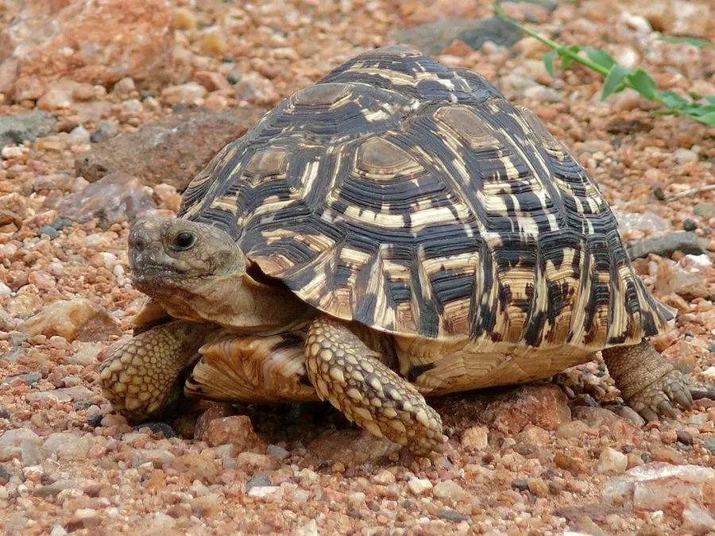

爬行动物 · 动物界
豹纹陆龟 Stigmochelys pardalis

非洲稀树草原上的大型陆龟，背甲高隆、黄底黑斑如豹纹，雌龟每窝可产数十枚卵，是非洲分布最广的陆龟之一。
- 分类
- 门脊索动物门纲爬行纲目龟鳖目科陆龟科属豹龟属
- 栖息环境
- 稀树草原、灌丛、半干旱草地与放牧地
- 地理分布
- 非洲东部与南部，从苏丹、埃塞俄比亚至南非、纳米比亚
- 保护级别
- IUCN 无危（LC）；CITES 附录Ⅱ
物种志
豹纹陆龟背甲长可达 40–70 厘米，体重 10–40 千克，是非洲体型最大的陆龟之一。背甲高隆呈圆顶状，底色为淡黄至沙黄，每块盾片上有黑色斑点或斑块，幼龟的黑斑更大更密，成体则转为细碎斑点，整体花纹酷似豹纹，故得名。头部与四肢黄色，头顶有一块黑色鳞片，四肢覆大鳞片，尾短。
它们分布于非洲东部与南部的稀树草原、灌丛与半干旱草地，是非洲分布最广的陆龟之一。食性以草为主，也吃嫩叶、果实、仙人掌与动物粪便中的残渣，晨昏活动，正午躲入灌丛阴影或自挖的浅坑中避暑。繁殖期雌龟会挖掘深达 30 厘米的巢穴，每窝产 5–30 枚甚至更多卵，孵化期约 8–12 个月，幼龟在雨季破壳。由于宠物贸易与栖息地放牧压力，部分地区种群下降，但整体仍较稳定。
形态与习性
- 背甲长约 40–70 cm，体重 10–40 kg
- 食性草为主，兼食嫩叶、果实、仙人掌与动物粪便残渣
- 繁殖每窝 5–30 枚卵，孵化期约 8–12 个月
- 花纹黄底黑斑，幼体斑块大而密，成体转为细碎斑点
- 活动节律晨昏活动，正午躲入灌丛阴影或浅坑避暑
- 寿命约 50–80 年，个别可超过 100 年
- 巢穴雌龟挖掘深约 30 cm 的巢穴产卵后覆土
趣味知识
- 豹纹陆龟的斑纹会随年龄变化，小时候黑斑大，长大变成细碎花点。
- 雌龟一窝能产下几十枚卵，是产卵数最多的陆龟之一。
- 幼龟往往在雨季集中破壳，松软的湿土让它们更容易钻出地面。